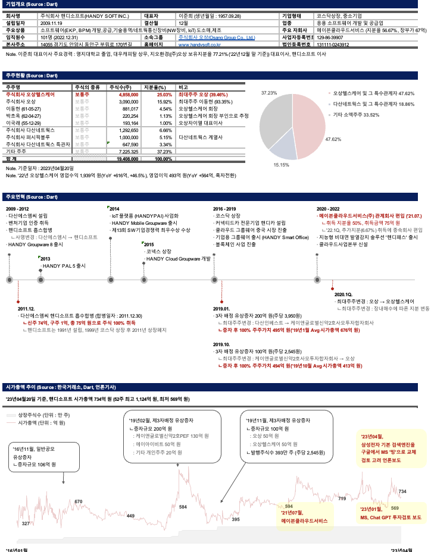
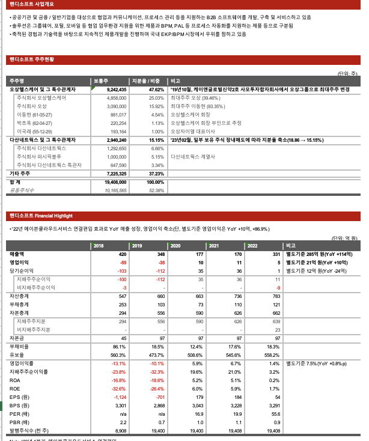
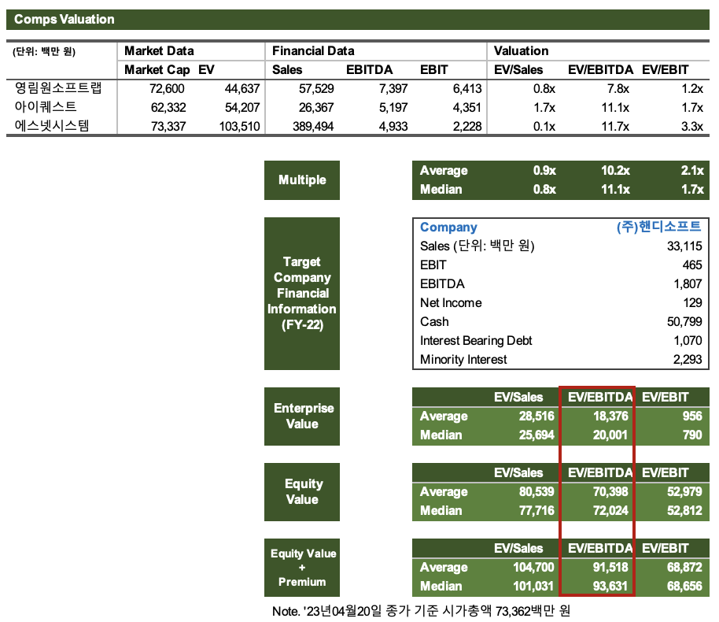

Finance × Strategy × Automation
왕지인
5년 9개월 · NHN 전략기획 → AIA생명 테크기획 · CFA L3
결제·PG·SaaS·보험·증권까지, 토스가 영위하는 사업 대부분에 실무 접점이 있습니다. NHN에서는 5개 계열사 연결 P&L을 계정 단위까지 분해해 드라이버를 찾았고, AIA에서는 자회사 설립 재무 모델을 처음부터 끝까지 혼자 만들었습니다. 숫자가 왜 틀어졌는지 설명하고, 그 다음 선택지를 시나리오로 제시하는 것 — 토스 Central FP&A에서 계속하고 싶은 일입니다.
AIA생명테크기획 · 자회사설립 · IT중장기계획
·
NHN전략기획 · 연결P&L · M&A
·
롯데이노베이트PI 컨설팅
·
CFALv.3 Candidate
JD Fit
반복해온 문제, 쌓아온 방식
Business Driver Analysis
왜 이 숫자인가, 거기까지 가는 것
두레이 인프라비 급등, 코미코 원가 구조 이상, 여행박사 광고 효율 저하 — 각각 계정·원장 단위로 파고들어 실제 드라이버를 새로 정의했습니다. NHN에서 3년간 반복한 방식입니다.
Scenario Modeling
시나리오 설계 — 손익·B/S·CF 연동
페이코 3개년·두레이 5개년 경영계획에서 손익·재무상태·현금흐름을 하나의 모델로 연동해 설계했습니다. 가정이 불확실할수록 민감도 분석이 먼저 들어갑니다.
Multi-entity Consolidation
계열사 연결 실무
내부거래 제거, 외화환산(B/S 기말·P&L 평균환율 분리), 외부투자자 풋옵션이 자본에 미치는 영향까지. NHN 5개 계열사, AIA 계열사 P&L 관리로 연결 실무를 반복했습니다.
Long-range Planning
전략 수립 — 실행 가능한 계획으로
AIA에서 3~5개년 IT 중장기계획을 시스템·조직·운영효율·예산 4개 축으로 구조화했습니다. 방향 나열이 아니라 과제별 현황 진단, 이행방안, 월별 실적 추적까지 포함한 계획입니다.
Automation & Tools
분석 파이프라인을 직접 만드는 것
Python으로 DART 공시 데이터 수집·정제 파이프라인을 구축하고, Azure 비용 분류·PPT 변환까지 자동화했습니다. 도구를 쓰는 수준이 아니라 직접 만드는 방식으로 일합니다.
Stakeholder & English
다자간 조율과 영어 실무
자회사 설립 프로젝트에서 재무·법무·테크·준법·외부 컨설팅사 6개 조직의 이견을 하나의 이사회 자료로 수렴시켰습니다. 홍콩 본사 영문 월간 보고·C레벨 즉답 대응 (OPIc AL).
Selected Work
직접 만든 다섯 가지
5개 계열사 P&L — 드라이버를 찾아서
2021 – 2025 · NHN
NHN 전략기획팀
| 상황 | 두레이·코미코·여행박사·에듀·패션고 5개 계열사의 월별 P&L을 단순 집계하는 것이 전부였습니다. 숫자가 왜 나빠지는지 설명할 수 없었고, 경영진 보고는 결과 보고에 그쳤습니다. |
| 접근 | 계정·원장 단위까지 내려가 고정/변동비 구조를 재분류했습니다. 두레이는 인프라비 항목을 재정의해 비용률을 30%p 낮췄고, 코미코 일본 법인은 원가 구조 재설계 후 YoY 적자폭이 절반 이상 줄었습니다. 여행박사는 광고 ROI 추적 체계를 새로 만들어 -50%에서 +10%대로 돌아왔습니다. |
| 결과 | 드라이버 기반 보고 체계가 팀 표준이 됐습니다. 경영진 질의에 즉답이 가능해졌고, 내부거래 제거·외화환산 처리·풋옵션 자본 영향까지 연결 실무를 하나의 사이클로 반복했습니다. |


페이코·두레이 중장기 경영계획 — 통합 재무 모델
2022 – 2025 · NHN
NHN 전략기획팀
| 상황 | 페이코 3개년·두레이 5개년 경영계획을 매년 새로 만들어야 했습니다. 각 사업의 매출 구조와 비용 드라이버가 다르고, 경영진은 "시나리오별로 어디까지 버틸 수 있냐"는 질문을 던졌습니다. |
| 접근 | 손익·재무상태표·현금흐름을 하나의 엑셀 모델에서 자동 연동했습니다. 사업 레버(결제량, 구독 ARR, 마케팅 투자 강도)별 민감도 분석을 기본 포함시켜, 경영진이 숫자 하나를 바꾸면 전체 그림이 바뀌는 구조를 만들었습니다. |
| 결과 | 이사회·경영진 Pre-review에서 즉답 가능. M&A 스크리닝 국면에서도 같은 모델 구조를 NHN Cloud·PG사·조각투자 등 10개+ 산업에 적용했습니다. |


자회사 설립 — 선례 없는 딜의 재무 모델
2025 – 현재 · AIA생명
AIA생명 테크기획팀
| 상황 | 국내에 선례가 없는 구조의 자회사를 설립하는 프로젝트. 재무·법무·세무·테크·준법·그룹사·외부 컨설팅사가 각각 다른 숫자와 가정을 들고 있었습니다. |
| 접근 | 매출 예측, 운영비 추정, 세후 NOI 프로젝션, IRR, 그룹 배당 시나리오를 하나의 모델로 통합했습니다. 현지 세무 리스크·배당 구조 이슈는 법무·세무 의견을 재무 수치로 번역해 모델에 반영했습니다. 이해관계자 간 이견이 생길 때마다 모델 위에서 수렴시켰습니다. |
| 결과 | 이사회 의결 자료 재무 섹션 단독 완결. 투자 회수기간·IRR·자본 소요 종합 분석이 경영진 최종 판단의 근거가 됐습니다. |
결제 시장 재무 데이터 파이프라인 구축
2022 – 2025 · NHN
NHN 전략기획팀
| 상황 | VAN·PG사 결제 시장 분석을 위해 8개 기업의 10년치 공시 재무 데이터가 필요했습니다. 매번 DART에서 수작업으로 수집하면 3일이 걸렸습니다. |
| 접근 | Python으로 DART Open API 크롤러를 구축했습니다. 기업·기간·계정 항목을 파라미터로 받아 재무제표를 자동 수집·정제·적재하는 파이프라인을 만들었습니다. AIA에서는 Azure 청구서 기반 VM별 비용 자동 분류 스크립트, PPT 자동 변환 파이프라인으로 이어졌습니다. |
| 결과 | 처리 시간 3일 → 30분 (10배 단축). 결제 시장 월별 모니터링 체계의 기반이 됐고, 이후 M&A 스크리닝 속도가 크게 빨라졌습니다. |



IT 중장기계획 — 전략을 실행으로 연결하기
2025 · AIA생명
AIA생명 테크기획팀
| 상황 | 3~5개년 IT 중장기 전략이 필요했지만, 기존 방식은 전략 방향 나열에 그쳤습니다. 재무계획과 연결되지 않아 예산 배분 근거가 약했습니다. |
| 접근 | 시스템·조직·운영효율·예산 4개 축으로 구조를 재편하고 핵심과제를 도출했습니다. 각 과제별 현황 분석과 이행방안을 설계했고, 경쟁사 IT 예산·인력 벤치마킹으로 투자 효율성 논리를 보강했습니다. 월별 Budget vs. Actual 분산 분석을 계획 수립 단계부터 설계에 포함시켰습니다. |
| 결과 | CTO·개발부문장 경영진 보고 완결. CapEx/OpEx 배분 개선 방향이 실제 예산 운영에 반영됐습니다. |
How I Think
FP&A로서 문제를 다루는 방식
01
숫자 밑에 있는 구조
P&L의 숫자가 바뀐 이유를 설명하려면 계정 단위 아래까지 내려가야 합니다. 드라이버를 재정의하지 않으면 같은 보고를 반복하게 됩니다.
02
가정을 명시한 시나리오
정답이 없을 때 가장 중요한 건 가정을 투명하게 만드는 것입니다. 민감도 분석으로 어느 변수가 결정적인지 먼저 드러냅니다.
03
자동화는 도구, 분석이 목적
반복 작업을 구조화하는 것은 시간을 확보하기 위해서입니다. 확보한 시간은 드라이버 분석과 시나리오 설계에 씁니다.
문제를 마주하면 사업 구조부터 해체합니다. 숫자의 움직임을 설명하는 드라이버를 찾고, 각 레버를 당겼을 때 무슨 일이 일어나는지 시나리오로 만듭니다. 경영진에게 전달할 때는 복잡한 모델을 하나의 판단 논리로 압축합니다.
Career
경력
2025.04 – 현재
AIA생명 (AIA Korea)
테크기획팀 대리
자회사 설립 E2E 재무 모델·이사회 보고 / IT 중장기계획 수립 (4 pillars) / 계열사 P&L 관리 / 홍콩 본사 영문 월간 보고 / Python 자동화 (Azure 비용·PPT 변환)
2021.12 – 2025.03 (3년 4개월)
NHN
전략기획팀 전임
5개 계열사 연결 P&L 관리·드라이버 분석 / 페이코·두레이 중장기 경영계획 / M&A 스크리닝 10개+ 산업 / Python DART 자동화 (3일→30분)
2020.08 – 2021.12 (1년 4개월)
롯데이노베이트
ERP컨설팅팀 PI담당 선임
롯데면세점 차세대 IT PI / 롯데제과 S&OP DT 마스터플랜 / 롯데마트·슈퍼 물류 통합 — 현장 As-Is → To-Be → 임원 보고 3사이클
학력
서강대학교
경영학·미국문화학 복수전공 (2020 졸업)
EM Business School, 스트라스부르 교환학생 2016–2017 / 캐나다 유학 2년
Skills
역량 & 자격
| FP&A Core | |
| Automation | |
| Strategy | |
| Certification | |
| Language | |
| Awards |